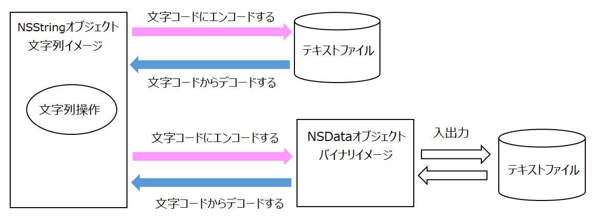

テキストファイルを読み書きする
処理のイメージ

以下の例ではホームディレクトリの下のDocumentsフォルダに作成したファイルを入出力する。Documentフォルダのパスは、NSHomeDirectory関数で取得したホームディレクトリ名に "/Documents/" を連結して作成する。
テキストファイルを読み込む
読み込んだテキストファイルからNSStringオブジェクトを作成する。入力ファイルのパスはNSString型で指定する。
読み込むファイルのデータがどんな文字コードであるかencoding引数に指定する。
値は、NSStringEncoding定数により指定する。
UTF-8の場合、NSUTF8StringEncoding
Shift-JISの場合、NSShiftJISStringEncoding
※ ここで扱う文字コードは、読み書きするファイルの文字コードが何であるかを指定するものである。Mac/OSの内部表現はUTF8であるが、それとは直接関係はないので混同しないように。
上記の操作で、入力ファイルのパスはNSURL型で指定する。NSURL型のオブジェクトはNSString型のオブジェクトから変換できる。
NSURLの内部表現は、"file:///Users/itohisao/Documents/input.txt" となる。
NSDataオブジェクトを経由する
テキストファイルのバイナリイメージをNSDataオブジェクトに読み込む。入力ファイルのパスはNSString型で指定する。
次にNSDataオブジェクトをNSStringオブジェクトに変換する。このとき読み込んだデータの文字コードをencoding引数に指定する。
上記の操作で、ファイルを読み込むとき入力ファイルのパスをNSUR型で指定する。
※ テキストファイルを読み書きするだけなら、NSDataオブジェクトを経由する必要はないが、文字コードの変換について補足したかったので記載した。
テキストファイルに書き出す
NSStringオブジェクトをファイルに書き出す。出力ファイルのパスはNSString型で指定する。
atomically引数がYESなら、元ファイルを残し、書き終わってからリネームする。安全性が比較的高い。
encohing引数に文字コードを指定する。ここで指定する文字コードでファイルのデータが作成される。
上記の操作で、ファイルに書き出すときファイルのパスをNSURL型で指定する。
NSDataオブジェクトを経由する
NSStringオブジェクトをNSDataオブジェクトに変換する。このとき変換後データの文字コードをencoding引数に指定する。
次にNSDataオブジェクトをファイルに書き出す。出力ファイルのパスはNSString型で指定する。
上記の操作で、ファイルに書き出すときファイルのパスはNSURL型で指定する